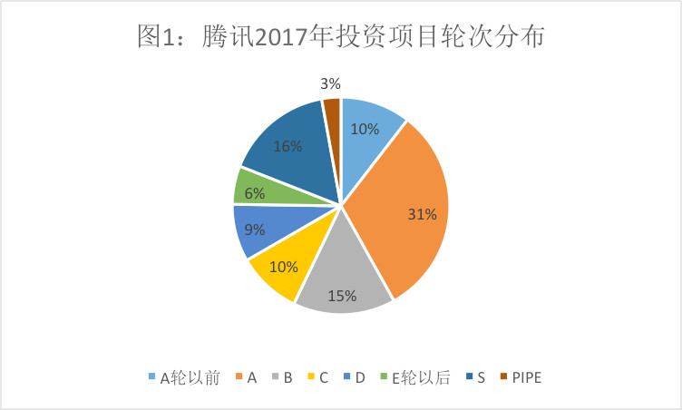
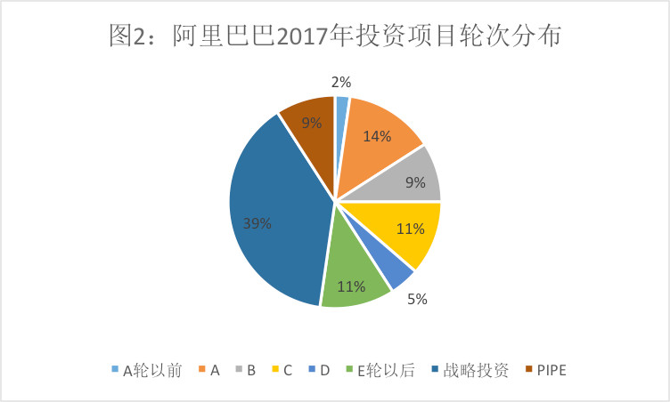
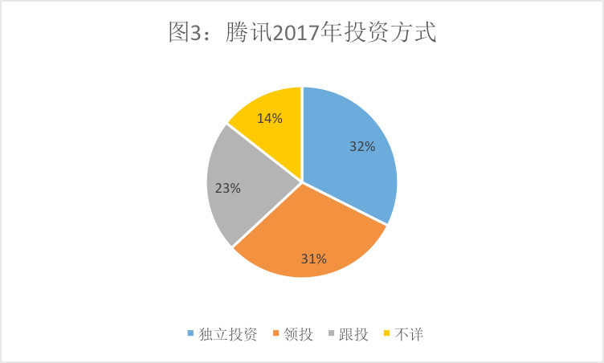
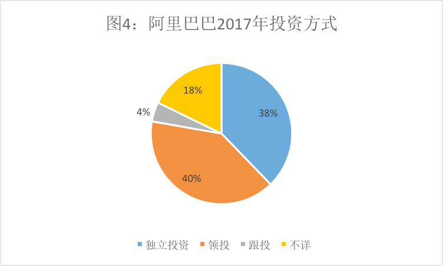

腾讯的投资帝国和阿里的实业版图：透视投资数据背后的玄机
2017年行将过去，各种年度盘点纷至沓来。日前，媒体发布的2017年BAT投资成绩单在网上大热，从这张榜单上，我们几乎可以得窥中国新经济投资的全貌，而腾讯和阿里作为中国最大的两家互联网巨头，其投资风格的差异也十分显著：腾讯已经成为中国事实上最大的PE机构，而阿里的投资则围绕既有的商业版图，显示出极强的实业属性。
投早期的腾讯 VS 投晚期的阿里
从表面上看，腾讯和阿里巴巴都是中国的互联网巨头，腾讯在社交和游戏领域独领风骚，而阿里巴巴则在电商领域占有优势，在自身绝对强势的主业之外，腾讯和阿里都纷纷进行对外投资，在中国的投资领域都已占有一席之地。然而，从2017年腾讯和阿里的投资布局来看，两家公司的投资风格完全不同。
先来看投资项目数。腾讯的投资项目数，最近两年都明显多于阿里巴巴，2016年腾讯投资75个项目，阿里投资37个项目；2017年腾讯投资113个项目，阿里投资45个项目。腾讯投资的项目总数都是阿里巴巴的两倍左右。

再来看投资轮次。在2017年可以统计的项目中，腾讯A轮以前的投资占投资项目总数的10%，A轮项目占31%，C轮及以前的项目占56%，超过所有项目的半数。而E轮以后、战略投资和PIPE（上市公司股权投资）的项目合计只占项目总数的25%。

再来看阿里，在可统计的范围中，阿里巴巴2017年投资的项目，E轮以后、战略投资和PIPE投资项目的比例达到59%，而腾讯对应的数字是25%，而A轮及A轮以前项目只占16%，而腾讯对应的比例是41%。
由此，我们可以看到一个很清楚的事实，腾讯的投资相对而言贯穿了企业从创业到成长的全过程，尤其是相对重视早期投资，具有明显的成长型投资特征；而阿里巴巴则相对聚焦在中后期甚至上市公司投资，带有明显的实业投资色彩。
根据不完全的统计，腾讯2017年投资案例中至少有二十多家投资金额低于1亿人民币，而阿里投资金额低于1亿人民币的项目在可统计的范围中只有5个。腾讯投的项目相对偏小，而周期偏早；阿里投资的项目相对偏大，周期也偏晚。到底是什么，让腾讯和阿里两家巨头的投资风格如此迥异？
玩投资的腾讯 VS 做实业的阿里
腾讯的投资逻辑在于，通过流量和资本的优势，快速进入每一个赛道扶持现有的优势企业，推动其快速成长、上市或在资本市场上实现市值增长，从而获取超额的回报，更以收获长期“收税”的“税源”与扩大业务版图互相推进、循环往复。

上图展示了腾讯2017年对项目的投资方式，腾讯独立投资的项目只占投资项目总数的32%，和其他机构联合投资的占68%，其中确认由腾讯领投的只有31%，而跟投的比例高达23%。腾讯的这种投资方式，和典型的PE/VC的投资模式比例结构非常相近。

我们再来看阿里，情形和腾讯完全不同。2017年阿里巴巴投资的项目中，独立投资的占到38%，领投的占40%，二者合计达到78%，远高于腾讯的63%，而阿里巴巴跟投的比例只有4%，几乎只相当于腾讯的零头。阿里对已投企业的话语权总体强于腾讯，但这样相对强势的投资方式，实际上源于实业企业而非投资机构的投资逻辑。
腾讯营收和利润主要来源于游戏业务，而通过强有力的社交业务，腾讯掌握了全网最大的流量入口，从某种程度上形成了对全网流量的垄断。在社交、游戏、文娱领域之外，腾讯主要通过参股投资的方式和更多的企业达成关系，在投后管理上也比较松散。
而阿里巴巴则不同，阿里的模式相对腾讯要重。从零售、贸易，到数据、物流，阿里巴巴是一整套面向全球的商业基础设施，因而阿里本身就是一个庞大的实业企业。在阿里看来，投资不是目的，而是手段，因此在阿里的投资中，控股投资和持股比例较高的战略投资比较多，阿里的投资不是为了像腾讯一样获得股权的增值，而是为了形成更庞大的实业版图。
“温和”的腾讯 VS “苛刻”的阿里？
近年来，关于腾讯和阿里投资风格的讨论从未间断。有种论调认为：腾讯对已投企业的管控相对较少，而阿里对已投企业则表现得比较强势。
这既源于“PE式”与“实业式”的不同投资逻辑，也源于腾讯与阿里迥然不同的商业本质。腾讯以参股投资为主的投资方式，和阿里以战略投资为主的投资方式，必然导致腾讯和阿里在投资领域的形象有明显差异。这种差异的背后，也体现两家公司在行业中所处位置的不同。
互联网深刻改变了经济生活，也在深刻地影响投资领域。在全新的时代，流量资源已经是一种特殊的资本，谁掌握流量，谁就成了互联网上的“土地所有者”，或者说是一条“高速公路”。在互联网上的所有玩家，要种地就得交地租，要开车就得交买路钱。在这个时代，不仅真金白银可以换得股权，流量更可以换股权。这是腾讯得以快速扩张其投资版图的最大秘密。
在互联网产业链中，腾讯实际上居于所有其他玩家的上游。虽然马化腾说“把半条命交给了合作伙伴”，但实际上腾讯对其合作伙伴的依赖程度并不高，在腾讯的核心业务版图社交和游戏领域，腾讯几乎没有对手。而在腾讯着力和阿里开展竞争的领域，投资圈内比喻为“小狼狗”战术，通过京东、新美大等自己参股的企业，和阿里开展竞争，这些企业对腾讯流量的依赖程度其实是很高的。
腾讯做的是股权投资，但利润比股权投资还要厚。因为腾讯在产业链上游，所有的已投企业如果做得不好，对它这个投资机构而言不过是概率上的损失，但已投企业一旦做得好，腾讯因为扼住了上游的流量和数据咽喉，随时可以和已投企业谈分成，至于怎么分，腾讯具有绝对的主动权。简单地说，做蛋糕是已投企业的事，蛋糕做大之后怎么分，谁多分谁少分，基本是腾讯说了算。
与表面上的温情观感不同，“腾讯系”企业其实有强烈的不安全感。“腾讯系”企业高度依赖腾讯的流量输入，它们自己在经营上保持一定“独立性”的背后，却是腾讯在资本和流量上对他们的双重绑定。给已投企业的东西，腾讯只要高兴可以随时拿走，正因为如此，公开的秘密是，企业在获取腾讯流量后拼命做的事情正是把流量往外面洗（导流到自己的APP上）。
而阿里巴巴做的是产业投资。阿里巴巴并不是一个流量入口，而是一家商业公司，阿里投资习惯的逻辑是，双方先要有业务合作的空间，然后再做股权上的合作。这种深度合作的达成，需要双方首先厘清在合作中的定位，明确你负责那个环节赚哪个环节的钱，我负责哪个环节赚哪个环节的钱，在这种模式下，做蛋糕是阿里和已投企业双方的事，蛋糕做大之后双方各自该怎么分就怎么分。
平心而论，由于阿里做的更多是产业投资，阿里必然要求与被投资方有强得多的商业绑定，互相之间的业务磨合也更加深入。与腾讯的“PE”式投资不同，由此与被投企业产生更多的摩擦甚至龃龉，也是正常的。
在流量时代，谁控制了流量入口，谁就是大航海时期把握海上商路的西班牙、二战后把握石油与金融命脉的美国。腾讯虽然还未到这一步，但已接近可以对所有迫切需求流量入口的企业尤其是早中期企业“收税”的地位。手握流量的腾讯居于绝对操盘地位，与Pony马在乌镇饭局上的核心座次一模一样。
阿里自成生态，是中国互联网格局中少有的无需给腾讯“交税”的公司，也拥有手淘、支付宝两座流量金山，但基本内部消化并不做流量生意，与被投企业是商业领域的上下游合作关系。
理解到这一点才会发现有意思的地方：与一般观感恰恰相反，对被投企业而言，“温和”的腾讯实际占据了绝对强势的地位，而“苛刻”的阿里实际操控力却相对更弱。
游戏帝国 VS 商业联盟
事实上，腾讯已经是中国中国最大的股权投资机构，目前腾讯累计投资规模已经超过400亿美元，而在中国PE机构中管理规模居于前列的的高瓴资本（也是腾讯和京东的战略投资者）、鼎晖投资的管理规模也分别只有约300亿和200已美元。腾讯已经是个真正意义上的投资帝国，不过这个帝国最重要的现金来源，不是实业，也不是保险公司，而是游戏业务。
也只有到了游戏（或许还有社交）这个领域，在争夺“小学生的早饭钱”上，腾讯才会亮出牙齿。腾讯已经是全球最大的游戏公司，它的游戏版图还在不断扩张。对于市场上的游戏公司，腾讯惯常的做法是，你要么整个公司全部卖给我，要么接受我的流量输入同时以8:2甚至9:1的苛刻条件分成。
以最近最火的“吃鸡”游戏来说，腾讯一边推出仿品，一边和游戏版权方谈判，两手准备、软硬兼施。腾讯在游戏投资这一领域的强势，远远超过阿里在零售领域。正是通过极强的控制力，除了网易等个别玩家还能独立运作以外，整个中国游戏行业几乎为腾讯所垄断。
从“游戏帝国”到“金融帝国”，腾讯将游戏的流量变成了真金白银的股权，并坐享股权快速增值的收益，这的确是个“城会玩”的高明生意。相较腾讯而言，阿里的日子就显得苦哈哈了。
懂投资的人都知道，中后期的实业投资，对产业运营能力的要求远高于腾讯的成长型投资。阿里巴巴的投资正是以实业投资为主的，数据也可以清晰地说明这一点，2017年阿里绝大部分的投资投向了新零售、电商、物流和企业服务等自身核心业务周边，其投资策略和集团的“五新”战略高度吻合。阿里的投资，核心是对传统产业进行互联网化改造，本质上是做实体经济。
外界对腾讯阿里投资风格的很多观察流于表象，在表象背后，是游戏起家的腾讯和商业起家的阿里完全不同的基因。打个比方吧，腾讯投资是个典型的做PE的富二代，而阿里投资则更像是个在实业领域耕地种田的。腾讯投资的确已经到了风轻云淡气定神闲的状态，流汗下力的阿里巴巴就不太可能有那么多的诗情画意了。
微信公众号：俊世太保，个人微信号：lijunhust
![36氪]() 打开微信“扫一扫”，打开网页后点击屏幕右上角分享按钮
打开微信“扫一扫”，打开网页后点击屏幕右上角分享按钮


前天36氪把mate10的积分由5000提到了6000，今天又说5000积分的1+5已兑完。。。
积分好像年底就清零了…呵呵…
他们这样会失去我们这些单纯的宝宝的
可以适当提高积分，不太过分，但这要是套路的话，那就走好不送了。
这样分析人家
怎么不能说了？
分析出致富路了吗😊
哈哈，难道一定要达到看完这篇文章我就会成为下一个腾讯或是阿里吗？这样的噴人不好。
公关稿写得不错
感觉说得挺对，打消了我对阿里的一些成见
阿里公关稿
作者是阿里系的吧，一个踩一个棒
收割的都是韭菜，阿里收流量费还少？最后还不是嫁接到消费者头上？寡头才可怕，充分竞争的领域才不会有超额利润。从这点上来说阿里腾讯当对手才好，没有哪家更高明，吃相都不好看。作者就别在这里捧一个踩一个了。
佩服作者颠倒黑白的能力
1.阿里独投也好领投也罢，根据你文中的意思，对被投公司的控制权却并不如腾讯所投资的公司（虽然事实并非如此），这我认为是阿里的失败。2.阿里因为要扩张自己的版图，所以投资各种公司，但是阿里的业务并不会给所投公司引流，反而淘宝天猫要吸走所投公司的流量。反之腾讯会给所投公司流量，扶植他们成长做大之后，再以股东的方式拿到自己的利益，双赢的局面。
听说36氪是“阿里系”吧。[偷笑]
所以你看啊，谁对中国经济有利，一目了然啊。
说的非常正确！ 腾讯系是用里花钱的：消费娱乐，游戏，社交。 而阿里系给老百姓带来的都是实实在在的东西，打破各种行业垄断，淘宝，支付宝，阿里，这些都是用来赚钱的，我顶马云！
阿里打破种种垄断？呵呵，真搞笑，阿里垄断这么多行业一家独大你没发现吗？
泛泛而谈，所言都是自己的想法，无数据，无例子，无递归结论，就把基因决定论放到了投资上。
如果腾讯和阿里是两个高手在过招，那么给我的感觉更多的像是，阿里的每一招都快准狠，而且拼尽全力，但腾讯却在不停的拿捏出手的角度和力度。
300亿美元200以美元，错别字，工资扣五十块
游戏害了不少青少年
屁股是歪的
只有做游戏的老板才会知道腾讯到底霸道不霸道吧，但基本上都被腾讯干掉或者招安了，核心利益，谁都没有太多的温情。
万亿市值
明白了很多道理，但依然过不好这一生